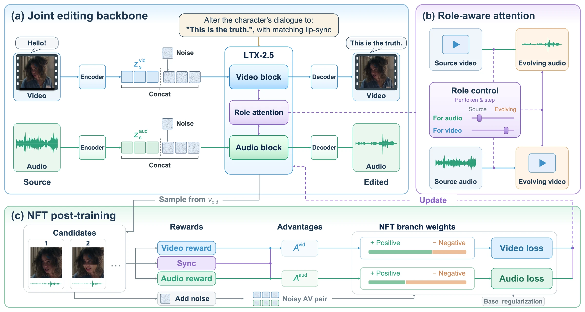

Abstract
Instruction-guided joint audio-visual (AV) editing requires coordinated changes while preserving unrelated content and maintaining synchronization. Key challenges include balancing cross-modal references and the cost of paired editing supervision. We propose RAVEdit-NFT, a framework combining role-aware cross-modal attention with negative-aware fine-tuning (NFT). We first train a supervised base editor, RAVEdit, on paired editing data. The editor uses role-aware cross-modal attention to adaptively balance source and evolving target references from the opposite modality. Starting from RAVEdit, we apply NFT on speech-editing conditions using quality, preservation, and synchronization feedback on generated candidates, without additional paired editing targets. Experiments on JAVEditBench show that our RAVEdit improves upon other baselines. RAVEdit-NFT further improves speech quality and AV synchronization on both the speech subset and the full benchmark, while achieving higher fidelity and audio-visual quality.
Method Overview

RAVEdit-NFT first learns a joint editor through supervised training, using role-aware cross-modal attention to balance source context and evolving target references during denoising. Negative-aware fine-tuning then refines the editor on speech-editing conditions using quality, preservation, and synchronization feedback, without additional paired editing targets.
Audio-Visual Editing Samples
Each example pairs one instruction with a source video and its edited target.
Loading samples…